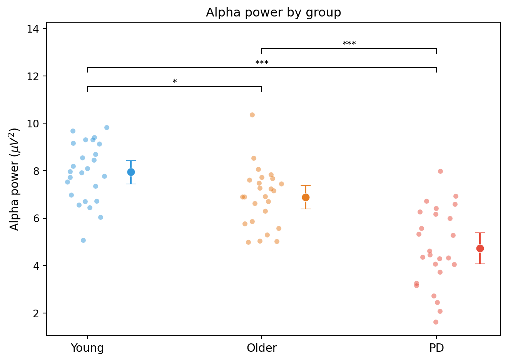

from scipy.stats import ttest_ind
# alpha_power_patients and alpha_power_controls are 1D arrays,
# one value per participant
t_stat, p_value = ttest_ind(alpha_power_patients,
alpha_power_controls,
equal_var=False) # Welch's t-test
print(f"t = {t_stat:.3f}, p = {p_value:.4f}")Group-level statistics for EEG
statistics
group-analysis
Comparing EEG metrics between groups, independent samples t-test, one-way ANOVA with pingouin, post-hoc tests, effect sizes (Cohen’s d, eta-squared), multiple comparisons correction, permutation tests, and reporting results.
Why this topic matters
EEG preprocessing and feature extraction (PSD, band power, PLV, metastability) give you a set of numbers for each participant. But numbers alone do not answer research questions. To determine whether Parkinson’s patients have lower metastability than healthy controls, or whether alpha power differs across age groups, you need statistical tests.
Group-level statistics in EEG research follow the same logic as in any other area of science: you compare distributions of a measurement across groups and ask whether the observed differences are larger than what you would expect by chance. What makes EEG challenging is the number of comparisons (many channels, frequency bands, and time points) and the non-normality of some EEG-derived measures.
This page covers the tests you are most likely to need when comparing EEG metrics between participant groups.
The general workflow
The typical analysis pipeline, from data to statistical results, looks like this:
- Extract one summary value per participant for each measure of interest. This might be alpha power at Pz, mean PLV in the beta band, or regional metastability at C3.
- Check assumptions: normality (Shapiro-Wilk test), homogeneity of variances (Levene’s test).
- Run the appropriate test: t-test for two groups, ANOVA for three or more groups.
- Report effect sizes: Cohen’s d for pairwise comparisons, eta-squared (\(\eta^2\)) for ANOVA.
- Correct for multiple comparisons if you tested multiple channels, bands, or measures.
The key is step 1: by the time you reach the statistics, each participant should be represented by a single number (or a small set of numbers). The statistical test compares these numbers across groups.
Independent samples t-test
When you have two groups and one continuous outcome, the independent samples t-test (or Welch’s t-test) is the standard choice:
Setting equal_var=False gives Welch’s t-test, which does not assume equal variances in the two groups. This is generally preferred because it is more robust and still valid when variances happen to be equal.
Cohen’s d
The t-statistic tells you whether the difference is statistically significant, but not how large it is. Cohen’s d quantifies the effect size in standard deviation units:
\[d = \frac{\bar{x}_1 - \bar{x}_2}{s_{\text{pooled}}}\]
where \(s_{\text{pooled}} = \sqrt{\frac{(n_1-1)s_1^2 + (n_2-1)s_2^2}{n_1+n_2-2}}\).
import numpy as np
def cohens_d(group1, group2):
n1, n2 = len(group1), len(group2)
s1, s2 = group1.std(ddof=1), group2.std(ddof=1)
pooled_std = np.sqrt(((n1 - 1) * s1**2 + (n2 - 1) * s2**2)
/ (n1 + n2 - 2))
return (group1.mean() - group2.mean()) / pooled_std
d = cohens_d(alpha_power_patients, alpha_power_controls)
print(f"Cohen's d = {d:.3f}")Conventional benchmarks for \(d\): 0.2 = small, 0.5 = medium, 0.8 = large. But these are rough guides. In EEG research, a Cohen’s d of 0.5 between patients and controls is a reasonably sized effect.
One-way ANOVA
When you have three or more groups, use a one-way ANOVA to test whether the group means are all equal:
import pingouin as pg
import pandas as pd
# Create a DataFrame with one row per participant
df = pd.DataFrame({
"alpha_power": np.concatenate([young, old, pd_patients]),
"group": (["young"] * len(young)
+ ["old"] * len(old)
+ ["PD"] * len(pd_patients))
})
# One-way ANOVA
aov = pg.anova(data=df, dv="alpha_power", between="group")
print(aov)The pingouin library provides a clean interface and automatically reports effect sizes. The output includes:
- F: the F-statistic
- p-unc: the uncorrected p-value
- np2: partial eta-squared (\(\eta_p^2\)), an effect size for ANOVA
Interpreting eta-squared
Eta-squared (\(\eta^2\)) tells you what proportion of the total variance in the outcome is accounted for by group membership:
- \(\eta^2 = 0.01\): small effect (1% of variance explained)
- \(\eta^2 = 0.06\): medium effect
- \(\eta^2 = 0.14\): large effect
Welch’s ANOVA
If the groups have unequal variances (check with Levene’s test), use Welch’s ANOVA instead:
aov_welch = pg.welch_anova(data=df, dv="alpha_power", between="group")
print(aov_welch)Post-hoc tests
A significant ANOVA tells you that at least one group differs from the others, but it does not tell you which pairs differ. Post-hoc tests make all pairwise comparisons and adjust for multiple testing:
# Tukey's HSD (assumes equal variances)
posthoc = pg.pairwise_tukey(data=df, dv="alpha_power", between="group")
print(posthoc)
# Games-Howell (does not assume equal variances)
posthoc_gh = pg.pairwise_gameshowell(data=df, dv="alpha_power",
between="group")
print(posthoc_gh)Bonferroni correction
The simplest multiple comparisons correction is Bonferroni: multiply each p-value by the number of comparisons (or, equivalently, divide the significance threshold by the number of comparisons). With 3 groups, there are 3 pairwise comparisons, so the Bonferroni-corrected threshold is \(0.05 / 3 = 0.0167\).
from scipy.stats import ttest_ind
import numpy as np
groups = {"young": young, "old": old, "PD": pd_patients}
pairs = [("young", "old"), ("young", "PD"), ("old", "PD")]
n_comparisons = len(pairs)
for g1_name, g2_name in pairs:
t, p = ttest_ind(groups[g1_name], groups[g2_name], equal_var=False)
p_bonf = min(p * n_comparisons, 1.0)
d = cohens_d(groups[g1_name], groups[g2_name])
print(f"{g1_name} vs {g2_name}: t={t:.3f}, "
f"p_bonf={p_bonf:.4f}, d={d:.3f}")Multiple comparisons in EEG
EEG data often involve many simultaneous tests: you might compare groups at 64 channels, 5 frequency bands, and 100 time points. That is 32,000 tests. Even with a p-value threshold of 0.05, you would expect about 1,600 false positives by chance alone.
Common correction methods
| Method | Type | When to use |
|---|---|---|
| Bonferroni | Controls FWER | Few tests, conservative |
| FDR (Benjamini-Hochberg) | Controls FDR | Many tests, less conservative |
| Cluster-based permutation | Non-parametric | Spatiotemporal data (ERP, TFR) |
FWER (family-wise error rate) is the probability of making one or more false positives. Bonferroni controls this strictly but is very conservative when there are many tests.
FDR (false discovery rate) is the expected proportion of false positives among all significant results. The Benjamini-Hochberg procedure controls FDR and is less conservative than Bonferroni, making it more appropriate when you have many correlated tests (as in EEG).
from statsmodels.stats.multitest import multipletests
# p_values is an array of p-values from multiple tests
reject, p_corrected, _, _ = multipletests(p_values, method="fdr_bh")
# reject: boolean array (True = significant after correction)
# p_corrected: adjusted p-valuesCluster-based permutation tests
For spatiotemporal data (e.g., comparing ERPs between groups at every channel and time point), cluster-based permutation tests (Maris and Oostenveld, 2007) are the gold standard. They work by:
- Computing a test statistic at every channel-time point.
- Clustering adjacent significant points (in space and time).
- Computing a cluster-level statistic (sum of t-values in each cluster).
- Building a null distribution by permuting group labels and repeating steps 1–3.
- Comparing the observed cluster statistics to the null distribution.
MNE implements this via mne.stats.spatio_temporal_cluster_test().
Permutation tests
Permutation tests make no distributional assumptions (no need for normality). They work by asking: if the group labels were randomly shuffled, how often would we see a difference as large as the one we observed?
import numpy as np
def permutation_test(group1, group2, n_permutations=10000, rng=None):
if rng is None:
rng = np.random.default_rng(42)
observed_diff = np.abs(group1.mean() - group2.mean())
combined = np.concatenate([group1, group2])
n1 = len(group1)
count = 0
for _ in range(n_permutations):
rng.shuffle(combined)
perm_diff = np.abs(combined[:n1].mean() - combined[n1:].mean())
if perm_diff >= observed_diff:
count += 1
return count / n_permutations
p_perm = permutation_test(alpha_power_patients, alpha_power_controls)
print(f"Permutation test p-value: {p_perm:.4f}")Permutation tests are particularly useful in EEG research because many EEG-derived measures (especially connectivity metrics) have non-normal distributions.
Reporting results
When reporting EEG group comparisons, include:
- The test used and its assumptions (e.g., “We used Welch’s t-test because Levene’s test indicated unequal variances”).
- The test statistic and degrees of freedom (e.g., \(t(38) = 2.54\)).
- The p-value (exact value, not just \(p < 0.05\)).
- The effect size (Cohen’s d for t-tests, \(\eta^2\) for ANOVA).
- Confidence intervals for the mean difference when possible.
- Multiple comparisons correction method and the corrected p-values.
Example: “Alpha power at Pz was significantly lower in the PD group (M = 3.2, SD = 1.1) than in the control group (M = 5.8, SD = 1.4), \(t(38) = 2.54\), \(p = .015\), \(d = 0.80\).”
Working example: ANOVA on simulated group data
The code below simulates alpha power data for three groups (young adults, older adults, and Parkinson’s patients), runs a one-way ANOVA, performs post-hoc tests, and visualises the results.
import numpy as np
import pandas as pd
import matplotlib.pyplot as plt
from scipy.stats import ttest_ind, f_oneway, shapiro, levene
rng = np.random.default_rng(42)
# ── Simulate group data ─────────────────────────────────────
n_per_group = 25
young = rng.normal(loc=8.0, scale=1.5, size=n_per_group)
old = rng.normal(loc=6.5, scale=1.8, size=n_per_group)
pd_patients = rng.normal(loc=5.0, scale=2.0, size=n_per_group)
group_names = ["Young", "Older", "PD"]
all_data = np.concatenate([young, old, pd_patients])
all_groups = (["Young"] * n_per_group
+ ["Older"] * n_per_group
+ ["PD"] * n_per_group)
df = pd.DataFrame({"alpha_power": all_data, "group": all_groups})
# ── Check assumptions ───────────────────────────────────────
print("=== Assumption checks ===")
for name, data in zip(group_names, [young, old, pd_patients]):
stat, p = shapiro(data)
print(f" Shapiro-Wilk ({name}): W={stat:.3f}, p={p:.3f}")
lev_stat, lev_p = levene(young, old, pd_patients)
print(f" Levene's test: F={lev_stat:.3f}, p={lev_p:.3f}")
# ── One-way ANOVA ───────────────────────────────────────────
f_stat, p_anova = f_oneway(young, old, pd_patients)
# Effect size: eta-squared
ss_between = sum(len(g) * (g.mean() - all_data.mean())**2
for g in [young, old, pd_patients])
ss_total = np.sum((all_data - all_data.mean())**2)
eta_sq = ss_between / ss_total
print(f"\n=== One-way ANOVA ===")
print(f" F({len(group_names)-1}, "
f"{len(all_data)-len(group_names)}) = {f_stat:.3f}")
print(f" p = {p_anova:.4f}")
print(f" eta-squared = {eta_sq:.3f}")
# ── Post-hoc: pairwise t-tests with Bonferroni correction ──
def cohens_d(g1, g2):
n1, n2 = len(g1), len(g2)
s1, s2 = g1.std(ddof=1), g2.std(ddof=1)
sp = np.sqrt(((n1 - 1) * s1**2 + (n2 - 1) * s2**2)
/ (n1 + n2 - 2))
return (g1.mean() - g2.mean()) / sp
groups_dict = {"Young": young, "Older": old, "PD": pd_patients}
pairs = [("Young", "Older"), ("Young", "PD"), ("Older", "PD")]
n_comp = len(pairs)
print(f"\n=== Post-hoc tests (Bonferroni, {n_comp} comparisons) ===")
for g1_name, g2_name in pairs:
g1, g2 = groups_dict[g1_name], groups_dict[g2_name]
t, p = ttest_ind(g1, g2, equal_var=False)
p_bonf = min(p * n_comp, 1.0)
d = cohens_d(g1, g2)
sig = "*" if p_bonf < 0.05 else "ns"
print(f" {g1_name} vs {g2_name}: t={t:.3f}, "
f"p_bonf={p_bonf:.4f}, d={d:.3f} {sig}")
# ── Visualisation ───────────────────────────────────────────
fig, ax = plt.subplots(figsize=(7, 5))
colours = {"Young": "#3498db", "Older": "#e67e22", "PD": "#e74c3c"}
positions = {"Young": 0, "Older": 1, "PD": 2}
for name, data in groups_dict.items():
x = positions[name]
# Jittered individual points
jitter = rng.uniform(-0.12, 0.12, len(data))
ax.scatter(x + jitter, data, alpha=0.5, s=25,
color=colours[name], edgecolor="white", linewidth=0.3)
# Mean and 95% CI
mean = data.mean()
sem = data.std(ddof=1) / np.sqrt(len(data))
ci95 = 1.96 * sem
ax.errorbar(x + 0.25, mean, yerr=ci95, fmt="o", markersize=8,
color=colours[name], capsize=5, capthick=1.5,
linewidth=1.5, markeredgecolor="white",
markeredgewidth=0.5)
ax.set_xticks([0, 1, 2])
ax.set_xticklabels(group_names, fontsize=11)
ax.set_ylabel(r"Alpha power ($\mu V^2$)", fontsize=11)
ax.set_title("Alpha power by group", fontsize=12)
# Add significance brackets
def add_bracket(ax, x1, x2, y, p_text):
ax.plot([x1, x1, x2, x2], [y, y + 0.2, y + 0.2, y],
color="black", linewidth=0.8)
ax.text((x1 + x2) / 2, y + 0.25, p_text, ha="center",
fontsize=9)
y_max = all_data.max() + 1
for i, (g1_name, g2_name) in enumerate(pairs):
g1, g2 = groups_dict[g1_name], groups_dict[g2_name]
_, p = ttest_ind(g1, g2, equal_var=False)
p_bonf = min(p * n_comp, 1.0)
if p_bonf < 0.001:
p_text = "***"
elif p_bonf < 0.01:
p_text = "**"
elif p_bonf < 0.05:
p_text = "*"
else:
p_text = "ns"
add_bracket(ax, positions[g1_name], positions[g2_name],
y_max + i * 0.8, p_text)
ax.set_ylim(None, y_max + len(pairs) * 0.8 + 0.5)
plt.tight_layout()
plt.show()=== Assumption checks ===
Shapiro-Wilk (Young): W=0.967, p=0.565
Shapiro-Wilk (Older): W=0.942, p=0.168
Shapiro-Wilk (PD): W=0.978, p=0.853
Levene's test: F=1.747, p=0.182
=== One-way ANOVA ===
F(2, 72) = 34.162
p = 0.0000
eta-squared = 0.487
=== Post-hoc tests (Bonferroni, 3 comparisons) ===
Young vs Older: t=2.990, p_bonf=0.0132, d=0.846 *
Young vs PD: t=7.728, p_bonf=0.0000, d=2.186 *
Older vs PD: t=5.183, p_bonf=0.0000, d=1.466 *
Reading the results
The ANOVA output should show a significant F-statistic, indicating that alpha power differs across the three groups. Eta-squared tells you how much of the variance in alpha power is explained by group membership.
The post-hoc tests break down the omnibus result into pairwise comparisons. In this simulation, we set the group means to differ (8.0, 6.5, and 5.0 for young, older, and PD respectively), so most pairwise comparisons should be significant after Bonferroni correction. The largest effect size (Cohen’s d) should be for the young vs PD comparison, where the mean difference is largest.
The plot shows individual data points (with jitter to avoid overlap), group means with 95% confidence intervals, and significance brackets. This type of figure conveys both the group-level effects and the within-group variability, giving readers a complete picture of the data.
Key takeaways
- Group-level EEG statistics require one summary value per participant per measure. Extract this from your feature of interest (band power, PLV, metastability, etc.) before running any tests.
- Use Welch’s t-test for two groups and one-way ANOVA (or Welch’s ANOVA) for three or more groups. Always check assumptions (normality, equal variances) and use appropriate alternatives when assumptions are violated.
- Post-hoc tests (Tukey’s HSD, Games-Howell, or pairwise t-tests with Bonferroni correction) are needed after a significant ANOVA to determine which pairs of groups differ.
- Effect sizes (Cohen’s d, eta-squared) are at least as important as p-values. They tell you the practical size of the difference, not just whether it is statistically distinguishable from zero.
- Multiple comparisons are a major concern in EEG research because of the many channels, bands, and time points. Use Bonferroni for a few tests, FDR (Benjamini-Hochberg) for many tests, and cluster-based permutation tests for spatiotemporal data.
- Permutation tests are a good fallback when distributional assumptions are uncertain. They are particularly useful for EEG connectivity measures, which often have non-normal distributions.
- When reporting results, include the test statistic, degrees of freedom, exact p-value, effect size, and the correction method used. A figure showing individual data points alongside group summaries is the clearest way to present the findings.